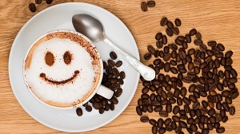

About us
At TOP Coffee, each day starts with a great cup of coffee with family, friends, co-workers ... As great coffee should be experienced - not rushed!
Our company was founded based on a passion to deliver you fresh roasted premium coffees that taste the way coffee was meant to taste, and we think a great cup of coffee inspires great conversation. In some small way, we hope to impact this world through great tasting coffee shared in community with others.
OUR COMMITMENT TO BUILDING COMMUNITY
At TOP Coffee, community includes all of us ... wherever we live, work, rest, and play. Our similarities outweigh our differences and our belief is that we can build community one cup at a time, whether here in the Northwest, with you our customers, and across the globe in the farm communities that produce our delicious coffee beans. Connect with us in person at one of our local Coffee Tasting Events in the Woodinville Wine District area. Follow us on Facebook for the next tasting event.
OUR COMMITMENT TO GREAT COFFEE
Taste: We are committed to crafting you excellent roasted whole bean coffee delivered fresh. We roast our coffees in a fluid bed roaster in small batches using traditional sight, smell, sound, & a bit of technology to craft flavor.
Health & Environment: Our Coffee is roasted in an environmentally friendly manner while burning no fossil fuels. We use only clean, hydroelectricity generated here in the Pacific Northwest leaving a minimal carbon footprint.
Sourcing our Beans: We are committed to bringing you responsibly sourced, high quality arabica beans. This is based on a commitment to our growers & their communities
From our community to yours, here's for TOP Coffee !
We're open 7 days
Monday-Saturday from 7:00am - 6:00pm
Sunday from 9:00am - 5pm
Open all public holidays AND NO SURCHARGE!
